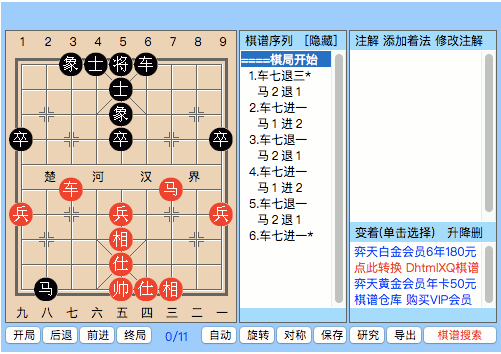

About Xiangqi
Wanna learn about Xiangqi?
For a detailed introduction to Xiangqi, please refer to this informative webpage for the relevant articles: The Basics, published by XQINENGLISH.com
For newbies who are impatient to LEARN HOW TO PLAY Xiangqi, please read these articles from xqinenglich.com:
Once you are familiar with the basic movements, you may be interested in the basic strategies of Xiangqi: The Features of Xiangqi Pieces
In fact, the whole story of Xiangqi is not complete without learning the rules of Chinese Chess. Some of the rules might be confusing such that even an experienced player may not be familiar with a specific situation. In general, it is sufficient to follow the Rules of Asian Xiangqi Federation. The Xiangqi rules adopted by the major competitions in China are stricter than Asian Xiangqi Federation Rules such that a player will not simply gain an advantage by having a perpetual move. Players are encouraged to check out the Details & Illustrations of the mentioned webpage for brief ideas on illegal perpetual moves.
By knowing the rules of Xiangqi, you may take the advantage of the rules to beat your opponent. For example, capturing a black horse using Xiangqi rule (the perpetual move of black horse is illegal) as shown below.
